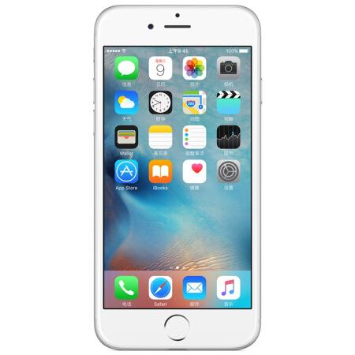
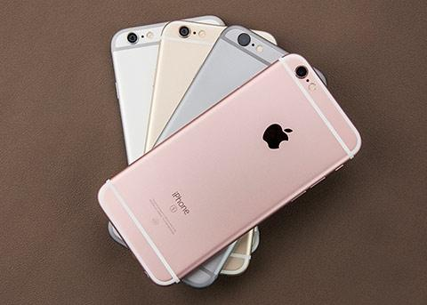

iphone6
The iPhone 6 has a 4.7-inch screen with a resolution of 1334 * 750 pixels and a built-in Apple A8 processor with 64 bit architecture. It is also equipped with a brand-new M8 coprocessor, which is specially designed for health applications. It has a rear 8 megapixel lens and a front 1.2 megapixel FaceTime HD camera. It also adds touch ID supports fingerprint identification and adds NFC function for the first time; it is also a three net mobile phone with 4G LTE connection speed up to 150Mbps and supports up to 20 LTE bands.

iphone6s
On September 10, 2015, Beijing time, Apple released the iPhone 6S. The iPhone 6S comes in gold, silver, dark grey and rose gold. The screen is made of high-strength ion-X glass, and the processor is apple A9 processor. The CPU performance is 70% higher than that of A8, the graphics performance is 90%, the rear camera is 12 million pixels, and the front camera is 5 million pixels. In order to reduce noise, CMOS adopts "deep slot isolation" technology and supports 4K video recording. In terms of data connection, it supports 23 band LTE network and twice speed Wi Fi connection. In September 25, 2015, Chinese mainland and overseas launched [1] simultaneously. At 1:00 a.m. Beijing time on September 10, 2015, Apple released the 32GB version of iPhone 6S / iPhone 6S plus at the 2015 autumn new product launch. IPhone 6S starts at 5288 yuan and iPhone 6S plus starts at 6088 yuan.

iphone6splus
The iPhone 6S plus was released on September 10, 2015 Beijing time. In addition to the original gold, silver, deep space gray and rose gold, the screen adopts high-strength ion-X glass, the processor adopts A9 + M9 processor, the CPU performance is 70% higher than A8, the graphics performance is 90%, the rear camera is 12 million pixels, and the front camera is 5 million pixels. The focus of the camera is more accurate. CMOS adopts the "deep slot isolation" technology similar to Samsung, and supports 4K video recording. In terms of data connection, it supports 23 band LTE network and twice speed Wi Fi connection. Available on September 25, 2015.